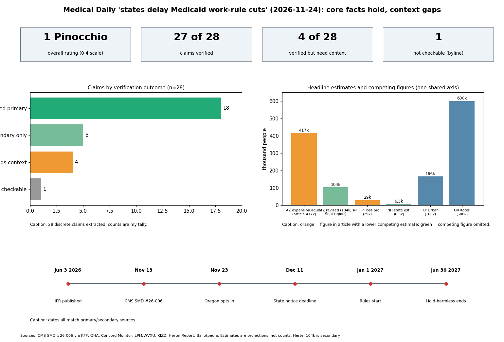

Medical Daily's Medicaid work-rule delay story earns 1 Pinocchio: facts hold, context is thin

Summary of findings
Overall: 1 Pinocchio (Washington Post scale). Of 28 claims extracted from the 2026-11-24 article, 27 check out against official or reputable reporting; one (the byline) is not checkable. Four are accurate but need context.
- Verified: CMS letter SMD #26-006 (Nov 13, 2026) offers an optional hold-harmless period through June 30, 2027; states must tell CMS by Dec 11, 2026; Oregon announced Nov 23; Kotek's "over 600,000" and "up to a third" quotes; Kentucky HB 2 "no later than January 1, 2027"; NH delay Jan 1 to July 1, about 59,000 average 2025 enrollment, 29,000 projection; Arizona's "reviewing every option" and 417,000 of about 1.7 million; 80 hours or $580 (80 x $7.25).
- Omission 1: Arizona's 417,000 is the whole expansion population. A September 2026 trade report (Hertel Report, secondary) says AHCCCS revised the number needing to report to about 104,000 after about 240,000 exemptions. The article does not mention this.
- Omission 2: NH's 29,000 loss figure is an advocacy-group projection; the state disputes it and estimates 6,300 affected.
- Framing: the headline implies three states; KJZZ, citing Becker's, reports at least 10 states plus DC planned to use the delay. The delay is optional, needs CMS approval within a mitigation plan, and states must still assess compliance.
- Imprecise: "passed over his veto" - the legislature overrode partial vetoes of HB 2 on April 14, 2026. Six-month renewals begin at each person's next renewal (Oregon: late 2027), not for all in January.
- Not checked at primary level: Urban Institute's 166,000 Kentucky figure (via LPM/WVXU only; report not opened). Kentucky Lantern returned HTTP 403.
- What would change the grade: evidence the 417,000 and 29,000 figures were the agencies' current numbers would lower it to 0-1 Pinocchio.
Step 1: Federal framework
Answer: Accurate. Key values: hold-harmless through 2027-06-30; notice by 2026-12-11; ages 19-64; 80 hrs/month or $580; retroactive coverage 3 months to 1 for expansion adults. Sources: KFF, Advisory Board, OHA. Confidence: high; CMS letter read via KFF, not directly.
Step 2: Oregon
Answer: Accurate; Nov 23 announcement and quotes confirmed (OHA release reprint). 600,000 is an initial projection of people needing to act. Phone and one.oregon.gov match OHA. Confidence: high.
Step 3: Kentucky
Answer: Beshear's "we'll take it" and HB 2 date accurate; law conflict reported. Veto wording imprecise. Urban 166,000 is a 2028 average-month projection. Confidence: medium.
Step 4: New Hampshire
Answer: Dates, Weaver quote, 59,000 and 29,000 match Concord Monitor; state's 6,300 counter-estimate omitted. Confidence: high.
Step 5: Arizona
Answer: Quote and 417,000 / 1.7 million verified (KJZZ); revised about 104,000 omitted. Confidence: medium (single trade source).
Sources
- https://www.kff.org/quick-insights/cms-announces-optional-6-month-delay-for-enforcing-medicaid-work-requirements/
- https://www.advisory.com/daily-briefing/2026/11/16/work-requirements
- https://www.oregon.gov/oha/hsd/ohp/pages/federal-changes.aspx
- https://www.tillamookcountypioneer.net/oregon-health-authority-oha-to-delay-enforcement-of-new-federal-medicaid-work-rules-to-keep-people-in-oregon-insured/
- https://www.wweek.com/news/health/2026/11/23/oregon-to-delay-enforcing-new-medicaid-work-rules-for-six-months/
- https://www.wvxu.org/2026-11-23/kentucky-to-delay-medicaid-work-requirements-state-law-may-conflict
- https://news.ballotpedia.org/2026/04/24/kentucky-legislature-overrides-governors-veto-on-medicaid-work-requirements-bill/
- https://www.concordmonitor.com/2026/11/23/nh-granite-advantage-medicaid-work-requirements-delayed/
- https://www.kjzz.org/politics/2026-11-23/some-states-opt-to-postpone-new-medicaid-work-requirements-arizona-is-still-deciding
- https://www.thehertelreport.com/ahcccs-revises-predictions-for-members-impacted-by-work-requirements/
- https://www.federalregister.gov/documents/2026/06/03/2026-11094/medicaid-program-community-engagement-requirement-for-certain-individuals
- https://www.medicaldaily.com/states-delay-medicaid-work-rule-cuts-2027-481661